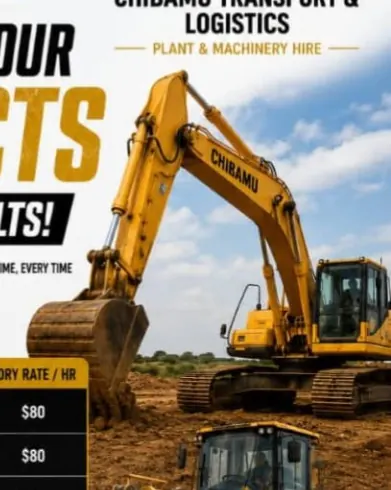
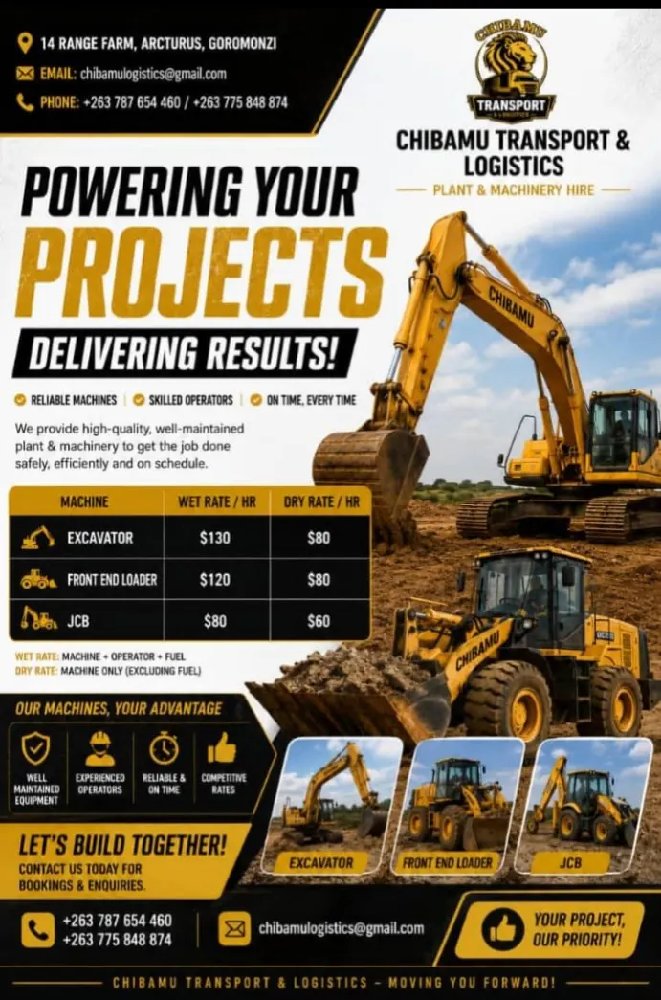
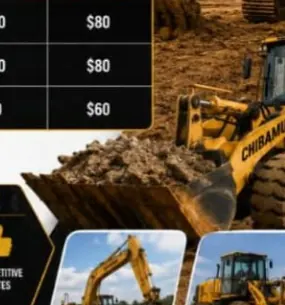
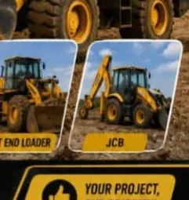

Excavator
Wet $130/hr · Dry $80/hr
When the right machine matters, Chibamu provides well-maintained plant and machinery with experienced operators to help demanding projects move safely, efficiently and on schedule.
See How We Help →
Chibamu Transport & Logistics provides high-quality, well-maintained plant and machinery for projects that demand practical, dependable support.
Machines prepared to support demanding site work.
Skilled support when you choose the wet-hire option.
A service built around keeping your project moving.
Clear wet and dry hourly rates for practical planning.
Choose the machine that matches your project's requirements.

Wet $130/hr · Dry $80/hr

Wet $120/hr · Dry $80/hr

Wet $80/hr · Dry $60/hr
Rates shown are from the supplied company flyer and can be confirmed for your specific project.
| Machine | Wet / hr | Dry / hr |
|---|---|---|
| Excavator | $130 | $80 |
| Front End Loader | $120 | $80 |
| JCB | $80 | $60 |
Wet rate = machine + operator + fuel. Dry rate = machine only, excluding fuel.
Tell us what you're working on and we'll help you identify the right machine option.